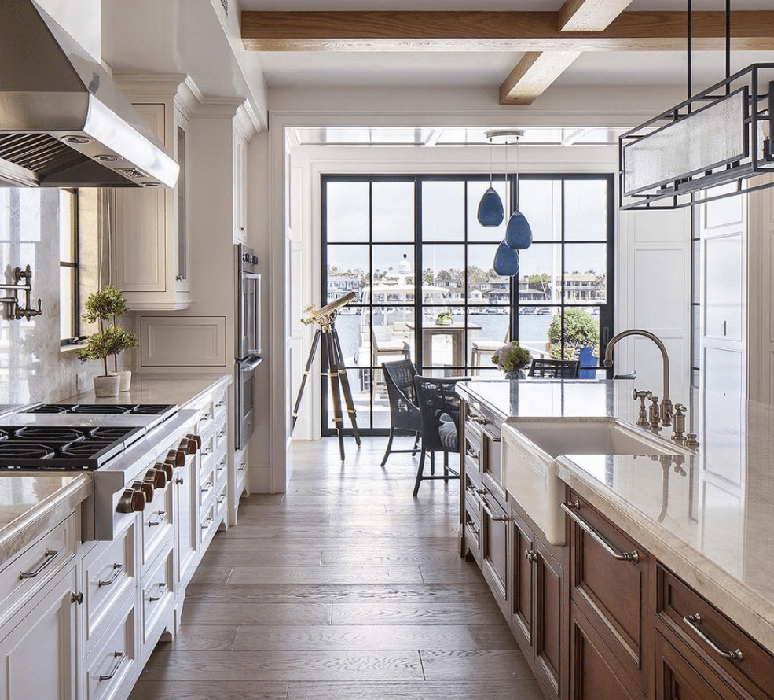

What are
traditional cabinets?
Traditional cabinets are defined by their relationship to classical design — raised panel doors, moulding profiles, corbels, carved details, and the kind of proportional discipline that has governed fine furniture-making for centuries. They communicate permanence, quality, and a sense that the space has been considered with care.
Unlike trend-driven styles, traditional cabinetry does not age — it matures. The same kitchen that looked exceptional on the day of installation continues to look exceptional twenty years later because its design references something older than any current trend.

What makes traditional cabinets
endure?
Traditional cabinetry earns its reputation through detail work that demands genuine skill. Raised panel doors, coped and stuck frames, carved corbels, fluted pilasters — these are not decorative shortcuts. They require time, precision, and a deep understanding of how wood moves and how profiles interact at scale.
The structural approach in traditional cabinet-making also reflects its age: face-frame construction, mortise-and-tenon joints, solid wood components in high-stress areas. These are methods that have survived not because nothing better was invented, but because they have not yet been improved upon.

- Raised panel doorsFull raised-panel profiles with coped and stuck frames, hand-fitted and sanded to a consistent standard.
- Moulding and cornice workCrown moulding, light rail, and base details designed as an integrated system for the room.
- Carved and turned elementsCorbels, pilasters, rosettes, and turned legs built to specification and finished to match.
- Premium solid hardwoodsCherry, walnut, maple, and alder selected for color consistency and long-term stability.
Three decades of
traditional craftsmanship
Traditional cabinetry is what H & J Cabinets was built on. Our founders began their work in an era when raised-panel doors, carved details, and ornate moulding profiles were the expectation — not the exception. That foundation gives us a level of fluency in traditional work that is genuinely rare in the current market.
We build every traditional cabinet in our Santa Ana shop with our own team. No subcontractors. Our installers understand how traditional components come together in the field — how crown moulding meets a coffered ceiling, how a corbel is blocked and supported, how a tall cabinet terminates at an arched soffit. That knowledge comes from decades of doing it, not from a manual.
"Traditional cabinetry is not about nostalgia. It is about building something that will still be worth looking at in fifty years."



Serving Newport Beach, Corona del Mar, Irvine, Laguna Beach, and Orange County.